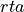
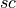
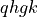
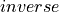
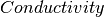

Conductivity¶
The conductivity class is used to calculate the thermal conductivity in one of the four frameworks outline in the theory portion. When building a conductivity class object, be sure to include a phonon object and select a framework for calculation.
API Reference¶
- class kaldo.conductivity.Conductivity(phonons: Phonons, *, method: str = 'rta', diffusivity_bandwidth: float | None = None, diffusivity_threshold: float | None = None, diffusivity_shape: str = 'lorentz', is_diffusivity_including_antiresonant: bool = False, tolerance: int | None = None, n_iterations: int | None = None, length: tuple[int, int, int] = (None, None, None), finite_length_method: str = 'ms', storage: str = 'formatted', **kwargs)[source]¶
The conductivity object is responsible for mean free path and conductivity calculations. It takes a phonons object as a required argument.
- Parameters:
phonons (Phonons) – Contains all the information about the calculated phononic properties of the system
method ('rta', 'sc', 'qhgk', 'inverse') – Specifies the method used to calculate the conductivity.  is relaxation time approximation;  is self-consistent;  is Quasi-Harmonic Green Kubo;  is inversion of the scattering matrix for mean free path.
diffusivity_bandwidth (float, optional) – (QHGK) Specifies the bandwidth to use in the calculation of the flux operator in the Allen-Feldman model of the thermal conductivity in amorphous systems. Units: rad/ps
diffusivity_threshold (float, optional) – (QHGK) This option is off by default. In such case the flux operator in the QHGK and AF models is calculated
diffusivity_shape (string, optional) – (QHGK) Defines the algorithm to use to calculate the diffusivity. Available broadenings are
 ,
,  and
and  .
Default is .
.
Default is .is_diffusivity_including_antiresonant (bool, optional) – (QHGK) Defines if you want to include or not anti-resonant terms in diffusivity calculations. Default is
 .
.tolerance (int) – (Self-consistent) In the self consistent conductivity calculation, it specifies the difference in W/m/K between n and n+1 step, to set as exit/convergence condition.
n_iterations (int) – (Self-consistent) Specifies the max number of iterations to set as exit condition in the self consistent conductivity calculation
length – (Finite Size) Specifies the length to use in x, y, z to calculate the finite size conductivity. 0 or None values corresponds to the infinity length limit.
finite_length_method ('ms', 'ballistic') – (Finite Size) Specifies how to calculate the finite size conductivity. ‘ms’ is the Mckelvey-Schockley method. ‘ballistic’ is the ballistic limit.
storage ('formatted', 'hdf5', 'numpy', 'memory', optional) – Defines the type of storage used for the simulation. Default is

- Returns:
An instance of the  class.
- Return type:
Examples
Here’s an example to calculate the inverse conductivity on the phonons object and tracing over the phonons modes
` Conductivity(phonons=phonons, method='inverse', storage='memory').conductivity.sum(axis=0)) `- Attributes:
conductivityCalculate the thermal conductivity per mode in W/m/K
diffusivityCalculate the diffusivity, for each k point in k_points and each mode.
mean_free_pathCalculate the mean_free_path per mode in A
Methods
calculate_conductivity_full([...])This calculates the conductivity using the full solution of the space-dependent Boltzmann Transport Equation.
This method calculates the inverse of the mean free path for each phonon.
Calculate the scattering matrix for phonons.
calculate_conductivity_and_diffusivity_qhgk
calculate_lambda_tensor
- property conductivity¶
Calculate the thermal conductivity per mode in W/m/K
- Returns:
conductivity – (n_k_points, n_modes, 3, 3) float
- Return type:
np array
- property mean_free_path¶
Calculate the mean_free_path per mode in A
- Returns:
mfp – (n_k_points, n_modes) float
- Return type:
np array
- property diffusivity¶
Calculate the diffusivity, for each k point in k_points and each mode.
- Returns:
diffusivity – diffusivity in mm^2/s
- Return type:
np.array(n_k_points, n_modes)
- calculate_scattering_matrix(is_including_diagonal, is_rescaling_omega, is_rescaling_population)[source]¶
Calculate the scattering matrix for phonons.